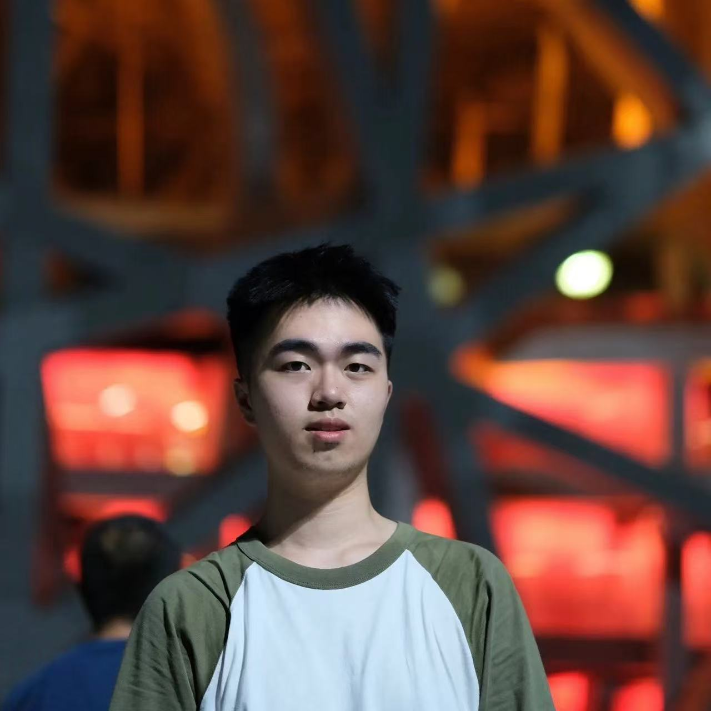
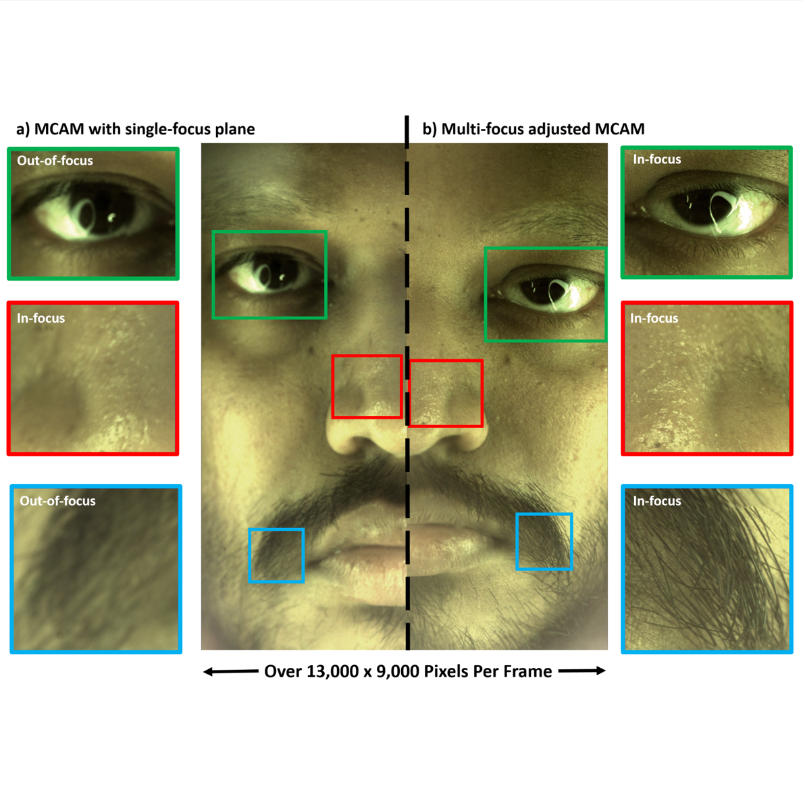

|
Weiheng Tang I am a senior undergraduate student in the School of Physics at Peking University, advised by Prof. He Sun. Previously, I had the privilege to work with Prof. Roarke Horstmeyer at Duke University. My research interests broadly include computational imaging, bio-medical optics, computer vision and machine learning for solving inverse problems. |
 |
{kind=link}
Research
|

|
Learning Diffusion Model from Noisy Measurement using Principled Expectation-Maximization Method
Weimin Bai, Weiheng Tang, Enze Ye, Siyi Chen, Wenzheng Chen, He Sun arXiv, 2024 We proposed a principled EM framework for learning clean diffusion models from noisy measurements with arbitrary corruption types, enhancing the E-step of EMDiffusion by upgrading the DPS algorithm to a plug-and-play Monte Carlo (PMC) method. |
|

|
Recording dynamic facial micro-expressions with a multi-focus camera array
Lucas Kreiss, Weiheng Tang, Ramana Balla, Xi Yang, Amey Chaware, Kanghyun Kim, Clare B. Cook, Aurelien Begue, Clay Dugo, Mark Harfouche, Kevin C. Zhou, Roarke Horstmeyer arXiv, 2024 We developed a multi-focus imaging system comprising a 54-camera array by adjusting focal plane distribution to capture dynamic facial expressions with high resolution, large field-of-view, and extended depth-of-field. |
|
Template from Jon Barron. |